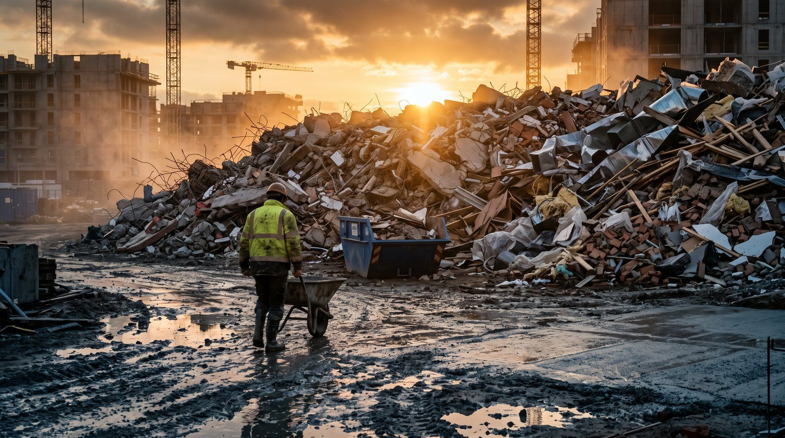

ОТХОДЫ / СТРОКА В СМЕТЕ
Мусор вывезли. В смете этого нет

Машины с боем и упаковкой ушли с объекта, счета от перевозчика и полигона пришли вам, а в смете на эту работу стоит одна строка на условный объём — или не стоит ничего. Это не редкий случай и не чья-то забывчивость: обращение с отходами почти всегда считается последним, по остаточному принципу, и почти всегда не тем, кто потом за него платит.
Почему строки нет или она занижена
Причин три, и все они системные.
Первая: объём мусора не проектируется. В проекте есть конструкции, а не отходы. Раздел, где отходы считаются, делается на стадии проектной документации по укрупнённым показателям и к реальному объекту привязан слабо. Демонтаж, переделки, бой при транспортировке, упаковка от материалов, грунт из приямков — всё это появляется на площадке, а не в расчёте.
Вторая: строка легко прячется в общей формулировке. «Уборка территории и вывоз строительного мусора включены в цену договора» — типовая фраза, которая закрывает вопрос для генподрядчика и открывает его для вас. Пока объём небольшой, это правда мелочь. Как только на участке идёт демонтаж или переделка, мелочь превращается в отдельную статью затрат без источника оплаты.
Третья: считают вывоз, а платят за обращение. В смете обычно видно одно — перевозку. Реальная стоимость складывается не только из неё, и именно недостающие составляющие делают строку заниженной ещё до начала работ.
Из чего реально складывается стоимость
- Накопление на площадке. Контейнеры или бункеры, их аренда, место под площадку накопления, её оборудование, раздельное складирование по видам отходов. Место на стеснённом объекте — само по себе дефицит.
- Сбор и внутриобъектное перемещение. Ручная выборка, спуск с этажей, подача к контейнеру. На высотных объектах это отдельная работа бригады, а не «попутно».
- Погрузка. Механизмом или вручную; если механизм чужой — по графику и с простоями.
- Транспортирование. Отходы определённых видов вправе перевозить только организация с соответствующей лицензией, и перевозка оформляется документами, а не устной договорённостью с водителем самосвала.
- Приём принимающей стороной. Полигон, комплекс переработки или площадка утилизации берут плату за приём. Тариф зависит от вида отхода и региона, и он не равен стоимости рейса.
- Паспортизация и классификация. На отходы, кроме отдельных категорий, оформляется паспорт; вид отхода определяется по федеральному классификационному каталогу отходов, а не на глаз. Опасность отхода — это характеристика из каталога, а не мнение прораба.
- Учёт и отчётность. Журнал учёта образования и движения отходов, талоны и акты приёма, отчётность образователя отходов. Это работа человека, и у неё есть стоимость, даже если в смете её нет.
Числовые тарифы, ставки платы и коэффициенты здесь сознательно не приводятся: они различаются по регионам и пересматриваются. Берите действующие тарифы принимающего объекта в вашем регионе и действующую редакцию правил обращения с отходами на дату составления сметы — и сверяйте их, а не память.
Отходы бывают разные, и порядок для них разный
Строительные отходы, коммунальные отходы и грунт — не одно и то же, и обращаются с ними по разным правилам. Смешивать их в одной строке сметы удобно, но именно из этого потом вырастает спор. Отдельно стоит грунт: вывоз излишков и поиск места для их размещения — самостоятельная задача со своей стоимостью, которая в смету на общестроительные работы обычно не попадает.
Ещё одно частое расхождение — упаковка. Поддоны, плёнка, бухты, обрешётка приезжают вместе с материалом, а уезжают за ваш счёт. Если материал давальческий, вопрос, кто платит за вывоз его упаковки, лучше решить до первой поставки.
Чей мусор — тот и платит
Практический узел всей темы: обязанности по обращению с отходами лежат на том, у кого отходы образовались, если стороны письменно не договорились иначе. На стройке это не так очевидно, как звучит. Демонтаж вёл один подрядчик, бой оставил другой, упаковку привёз поставщик заказчика, а контейнер один на всех.
Поэтому в договоре и смете должно быть названо: кто считается собственником отходов по каждому виду работ, кто организует накопление и вывоз, кто заключает договор с перевозчиком и принимающим объектом, и кто ведёт учёт. Если этого нет, роль образователя отходов на площадке достаётся тому, кто физически работает, — то есть вам.
Что происходит, когда объём превышает сметный
Сценарий одинаков почти везде. Работы идут, контейнеры уходят чаще, чем заложено, счета накапливаются. Разговор с генподрядчиком откладывается до закрытия месяца. При закрытии выясняется, что в смете строка на условный объём, фактический объём подтверждён только вашими внутренними бумагами, а превышение объявляется вашей неэффективностью: «слишком много боя», «плохо организовано складирование».
Ключевая слабость здесь не в цене, а в доказуемости объёма. Мусор — единственная позиция, которая физически исчезает с объекта раньше, чем кто-то её примет. После вывоза предъявлять нечего, кроме документов.
Что удерживает объём в доказуемом виде:
- Талоны, транспортные документы и акты приёма от принимающего объекта — с датой, видом отхода и количеством.
- Журнал учёта на объекте, который ведётся ежедневно, а не восстанавливается в конце месяца.
- Фотофиксация мест накопления с датами — до и после вывоза.
- Отметка представителя генподрядчика на объекте о фактическом количестве вывезенных единиц, хотя бы в виде подписи на реестре.
- Письменное уведомление о превышении сметного объёма — в тот момент, когда превышение стало очевидным, а не когда пришёл счёт.
Последний пункт важнее остальных. Превышение, о котором сообщили заранее, — это предмет соглашения о дополнительных работах. Превышение, обнаруженное при закрытии, — это ваш убыток, который вы просите компенсировать задним числом.
Как считать объём заранее
Объём отходов считается не по объёму конструкции, а по объёму того, что реально уедет. Разобранный материал занимает больше места, чем занимал в деле, — на это в расчётах применяется коэффициент разрыхления, и его значение берётся из действующего норматива для конкретного вида отхода, а не по привычке. Дальше — единица измерения: смета может быть в кубометрах, перевозчик считает рейсами и объёмом кузова, полигон — тоннами. Пересчёт между ними и есть место, где строка расходится с реальностью.
Минимум, который стоит зафиксировать в смете и договоре: вид отходов и их источник, единица измерения и способ пересчёта, сметный объём, порядок подтверждения фактического объёма и порядок действий при его превышении.
Что проверить в своей смете сегодня
- Есть ли отдельные позиции на сбор, перемещение, погрузку, перевозку и приём отходов — или всё сведено к одной строке «вывоз мусора».
- Названа ли плата принимающей стороны отдельно от стоимости перевозки.
- Учтены ли аренда контейнеров и место накопления.
- Кто оформляет паспорта, ведёт журнал учёта и сдаёт отчётность — и оплачена ли эта работа.
- Разделены ли строительные отходы, коммунальные и грунт.
- Кто платит за вывоз упаковки от давальческого материала.
- Что в договоре сказано о превышении сметного объёма и о порядке его согласования.
Чего у нас нет
Комплекта по составлению смет мы не продаём и не планируем: шаблонов сметы и расчёта объёмов отходов у нас нет. Здесь начинается работа сметчика и его программы, а также специалиста по экологии. Мы закрываем то, что происходит со сметой дальше, — момент, когда фактический объём разошёлся со сметным и об этом нужно договариваться деньгами.
ПЛАТНЫЙ КОМПЛЕКТ
Комплект «Дополнительные работы: как получить оплату»
Объём мусора сверх сметного — это дополнительная работа, и оплачивается она по тем же правилам, что и любая другая: сначала уведомление и фиксация, потом акт и расчёт, и только потом счёт. В комплекте — уведомление о необходимости дополнительных работ, фиксация устного поручения, акт согласования объёма и цены, расчёт стоимости, журнал ежедневной фиксации, письмо о приостановке, алгоритм от поручения до оплаты. 12 файлов. Это типовые шаблоны, не вычитанные юристом под ваш объект: внутри каждого назван перечень ситуаций, в которых их применять нельзя.
2 490 ₽
Купить комплект →БЕСПЛАТНО, ЗА EMAIL
Допработы: как зафиксировать поручение до начала
Вывоз мусора — классический объём, который в смете занижен, а делать приходится полностью. Как зафиксировать превышение до того, как его сделали, — чек-лист и реестр с расчётом.
- Чек-лист до начала допработ
- Схема фиксации поручения
- Шаблон уведомления
- Реестр допработ с расчётом